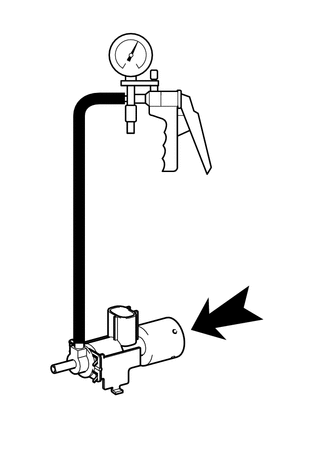
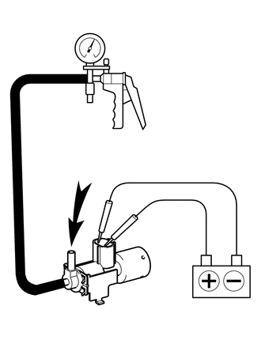

RM3140CG
_51
发动机/混合动力系统
_025039
7ZR-FE 进气/排气系统
_0129902
真空开关阀 (ACIS)
G
7ZR-FE 进气/排气系统 真空开关阀 (ACIS) 检查
程序

 1.检查 1 号真空开关阀总成 (ACIS)
1.检查 1 号真空开关阀总成 (ACIS)
a.
根据下表中的值测量电阻。
- 标准电阻:
检测仪连接 条件 规定状态 1 - 2 20°C (68°F) 27 至 33 Ω 1 - 阀体 始终 10 kΩ 或更大 2 - 阀体
如果结果不符合规定，则更换 1 号真空开关阀总成 (ACIS)。
b.
检查 1 号真空开关阀总成 (ACIS) 的工作情况。
i.

1.615,3.344 1.75,2.771
1.75,2.771 1.906,2.771
false
0.354,3.583 0.771,3.583
false
1.948,2.688 2.26,2.844
0.313,0.156
10
*a
0.188,3.5 0.5,3.656
0.313,0.156
10
*b
2.729,3.031 3.042,3.188
0.313,0.156
10
*c
| *a | 滤清器 |
| *b | 端口 (E) |
| *c | 空气 |
向端口 (E) 施加真空时，检查并确认滤清器吸入空气。
- 标准状态:
滤清器吸入空气。
如果结果不符合规定，则更换 1 号真空开关阀总成 (ACIS)。
ii.

0.656,3.385 0.885,3.385
false
0.698,4.396 0.833,4.396
0.833,4.396 0.875,3.74
false
1.073,2.208 1.385,2.365
0.313,0.156
10
*a
0.49,3.292 0.802,3.448
0.313,0.156
10
*b
0.531,4.302 0.844,4.458
0.313,0.156
10
*c
| *a | 空气 |
| *b | 端口 (E) |
| *c | 端口 (F) |
在端子间施加蓄电池电压。 向端口 (F) 施加真空时，检查并确认端口 (E) 吸入空气。
- 标准状态:
端口 (E) 吸入空气。
如果结果不符合规定，则更换 1 号真空开关阀总成 (ACIS)。